Monexo - aplikacja mobilna do wymiany walut
Monexo to mobilna aplikacji do wymiany walut, którą zaprojektowałem jako odpowiedź na realne problemy użytkowników korzystających z istniejących rozwiązań FinTech.
Rola: UX Designer; Front-end Developer
Zakres odpowiedzialności: Research, Koncept produktu, Architektura informacji, Projekt interfejsu, Testy użyteczności
Czas trwania: 13 tygodni
Metodyka: Lean UX / Design Thinking – iteracyjne projektowanie oparte na badaniach użytkowników, testach użyteczności i analizie konkurencji, z priorytetyzacją funkcji w ramach MVP.
{kind=link}
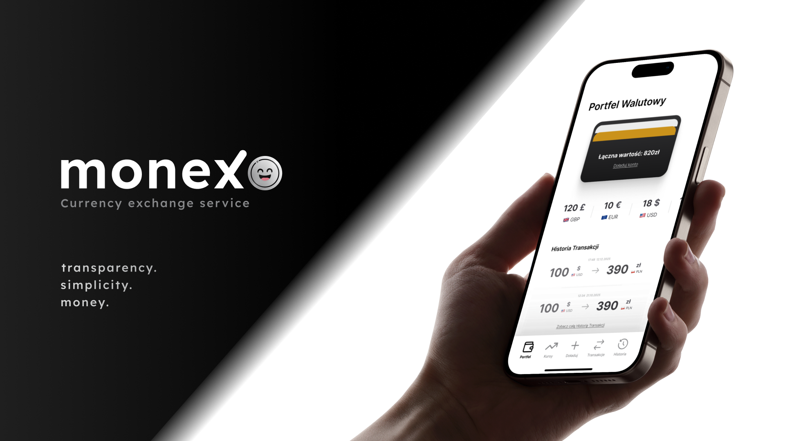
Kontekst
Analiza rynku wykazała, że wiele istniejących aplikacji do wymiany walut jest nieczytelnych, przeładowanych informacjami i opartych na niejasnym modelu prowizji, co stworzyło niepotrzebną barierę dla użytkowników chcących wykonać prostą wymianę walut.
Problem
Użytkownicy często nie mieli pewności co do rzeczywistego kosztu transakcji, gubili się w interfejsie i musieli przechodzić przez zbyt wiele kroków, aby wykonać podstawową operację.
Cele
🎯 Uproszczenie procesu wymiany walut do maksymalnie kilku intuicyjnych kroków.
🎯 Pełna transparentność kursów i opłat — brak ukrytych prowizji i niejasnych przeliczeń.
🎯 Budowa zaufania do produktu FinTech poprzez czytelną komunikację i przewidywalność procesu.
Ograniczenia
⚠️ Wysokie wymagania dotyczące zaufania — aplikacja finansowa musi być postrzegana jako bezpieczna i wiarygodna.
⚠️ Konieczność jasnego komunikowania kosztów bez przeciążania użytkownika danymi.
⚠️ Minimalizacja złożoności interfejsu przy zachowaniu pełnej kontroli użytkownika.
⚠️ Projekt mobile-first, dostosowany do szybkiego i częstego użycia.
Badania i Wnioski
Czy ludzie potrzbują naszego produktu? - Analiza rynku i trendów branżowych
Przeanalizowałem rynek i trendy w branży, przeglądając raporty oraz topowe aplikacje, aby zrozumieć, czego naprawdę potrzebują użytkownicy. Zauważyłem, że przy rosnących wymaganiach użytkowników podstawowe funkcje są często ukrywane, by uwydatnić nowe możliwości. W mojej aplikacji postawiłem na spełnianie podstawowych potrzeb w pierwszej kolejności, a funkcje dodatkowe zostały bardziej zagnieżdżone, tak by nie przeszkadzały w codziennym szybkim zarządzaniu finansami.
Jednocześnie zidentyfikowałem popularne funkcjonalności, takie jak portfele wielowalutowe, automatyczne zlecenia zakupu walut czy obsługa kryptowalut, które odpowiadają na realne potrzeby użytkowników w planowaniu transakcji i zarządzaniu pieniędzmi, umożliwiając im pełniejszą kontrolę nad finansami.
Analiza problemów konkurencji
Podczas analizy konkurencyjnych aplikacji i opinii użytkowników zidentyfikowałem kluczowe problemy, które znacząco wpływają na odczucia użytkownika:
• Zbyt skomplikowane menu – użytkownicy wyrażając opinie na temat konkurencji często skarżą się na chaos w opcjach i trudności w szybkim wykonaniu podstawowych operacji.
• Nieintuicyjna nawigacja – Użytkownicy często miewają również problemy z dotarciem do pożądanej funkcji w apolikacji.
• Brak transparentności w opłatach – użytkownicy odczuwają brak przejrzystości i spójności w opłatach i niepewność co do zwrotów oraz oprocentowania.
Analiza pozwoliła mi zidentyfikować kluczowe problemy użytkowników, które miałem zamiar rozwiązać w następujący sposób:
• Uproszczeniu menu i hierarchii funkcji, aby kluczowe działania były dostępne w 2–3 krokach;
• Wprowadzenie podglądu transakcji, a także informowania użytkownika na bieżąco o opłatach i statusach wymian;
• Zapewnienie transparentności kosztów i komunikacji, aby użytkownik zawsze wiedział, jakie opłaty i oprocentowanie obowiązują jego środki.
Ideacja
Dla kogo będzie nasza aplikacja?
Kształtowanie produktu rozpocząłem od stworzenia trzech person dla naszego produktu. To pokazało mi, że
{kind=link}
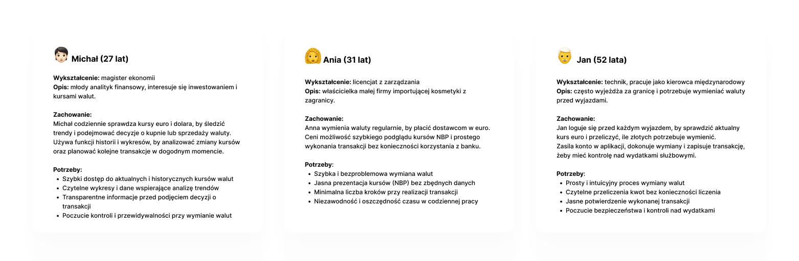
Głównymi potrzebami naszych użytkowników okazały się być:
• Szybkość dostępu do najważniejszych funkcji
• Prostota w obsłudze aplikacji
• Transparentność w opłatach za tranzakcje oraz
• Poczucie kontroli nad tranzakcjami w aplikacji
Co będzie najważniejsze? - Prioretyzacja
Używając MoSCow ustaliłem, które funkcje będą kluczowe, które najlepiej żeby się znalazły, a które są jedynie opcjonalnymi usprawnieniami.
{kind=link}
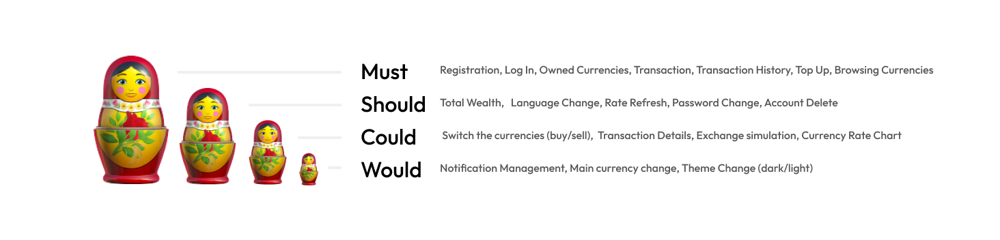
W ramy MVP weszły funkcjonalności:
• Wirtualnego portfela z możliwościa podglądu posiadanych walut
• Przeglądu kursów NBP
• Wymiany walut
• Historii tranzakcji
• Doładowania konta
• Rejestracji, Logowania, Zmiany hasła i Usunięcia konta
W jakim stylu?
Stworzyłem skromny Style Guide z podstawowymi elementami interfejsu, tak aby aplikacja była spójna i estetyczna.
{kind=link}
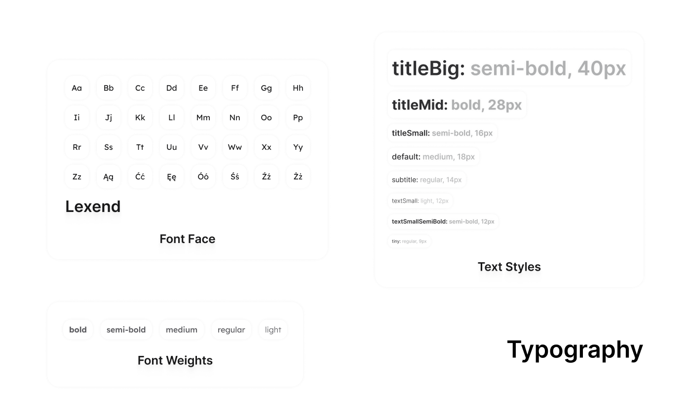
{kind=link}
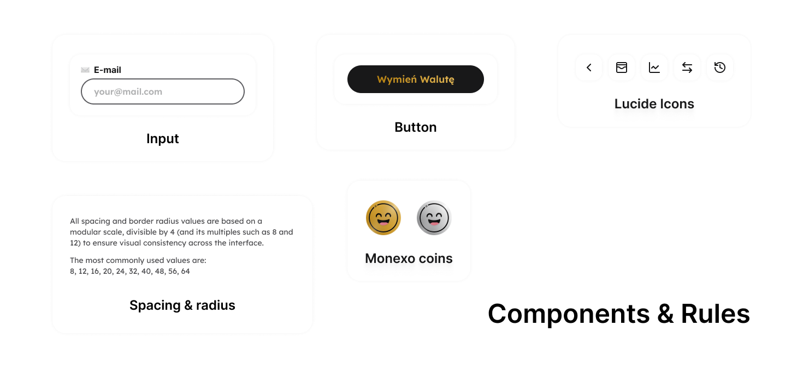
{kind=link}
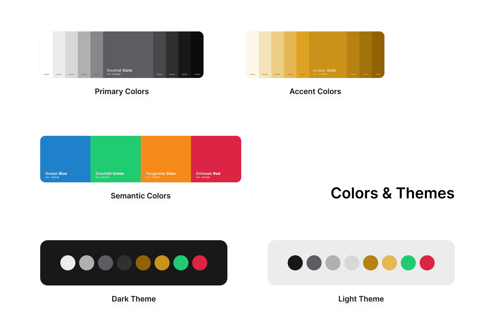
Interfejs aplikacji został zaprojektowany w estetyce minimalistycznej, z jedną główną akcją użytkownika — „Wymień walutę”. A kolorystyka i typografia wspierają czytelność, spokój oraz poczucie bezpieczeństwa, co jest kluczowe w produktach FinTech.
Teraz pytanie gdzie co umieścić?
Wykorzystując wireframe'y rozmieściłem elementy na ekranach aplikacji tak, aby wyczerpać główne zapotrzebowania naszej grupy docelowej oraz priorytetowe funkcje aplikacji.
{kind=link}
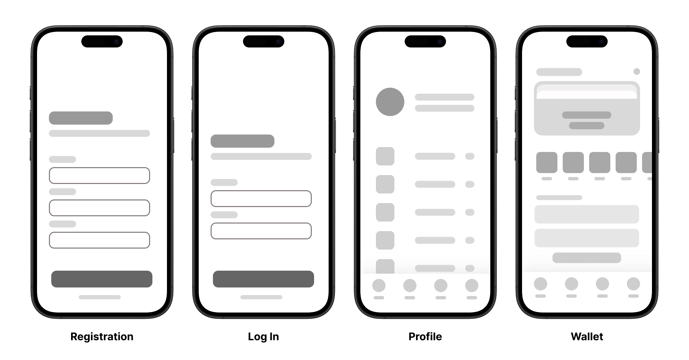
{kind=link}
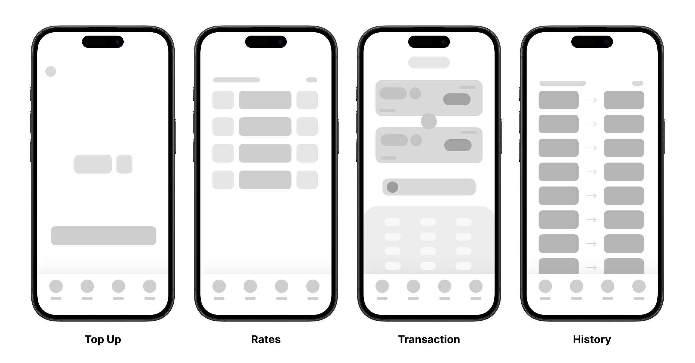
I dokąd z tych ekranów będzie można przejść..
Zająłem się więc zaprojektowaniem Breadboardów - wszystkich możliwych ścieżek z poszczególnych ekranów, tak aby użytkownik mógł w łatwy sposób dostać się tam gdzie tego potrzebuje. W aplikacji wykorzystuje tab navigation, co już znacznie ułatwia przemieszczanie się pomiędzy ekranami, a linki w dobrych miejscach jedynie podpowiadają co i gdzie zrobić jako następny krok. Na tym etapie dodałem np. ...
{kind=link}
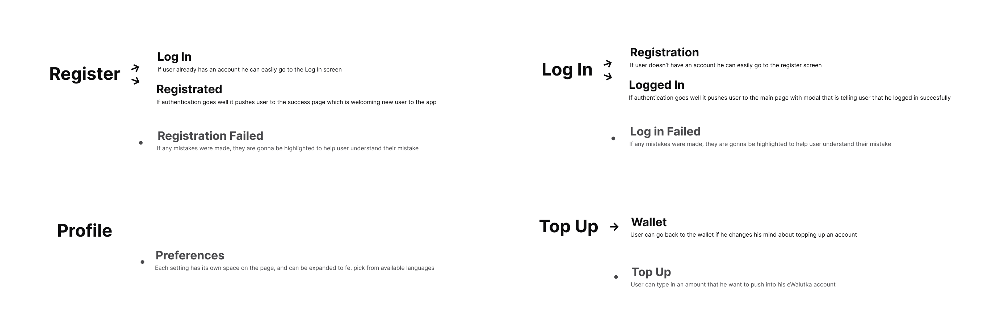
{kind=link}
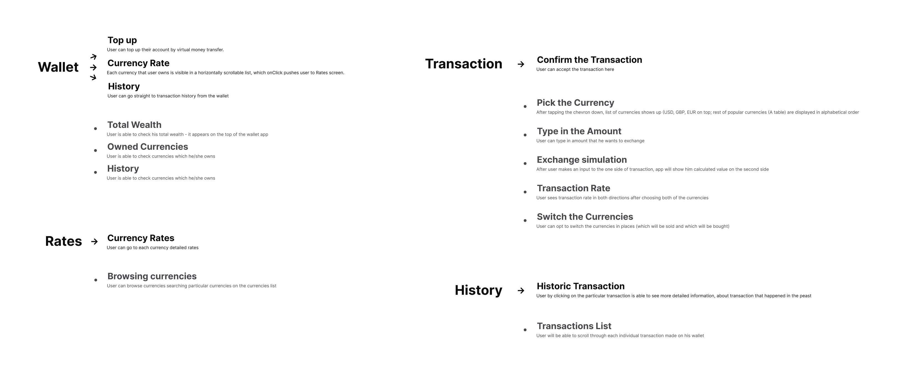
Iteracje
Projekt właściwego produktu przeprowadzałem iteracyjnie, implementując poszczególne funkcjonalności, testując je i dostosowując je do potrzeb użytkowników produktu.
Na początku to co kluczowe do funkcjonowania aplikacji - MVP & walidacja podstawowych flow
Zaprojektowałem MVP obejmujące kluczowe funkcje: sprawdzanie kursów oraz wymianę walut. Celem tej iteracji było szybkie zweryfikowanie głównych założeń produktu, struktury informacji oraz podstawowego flow wymiany.
Czemu lista kursów sortowana alfabetycznie nie będzie dobrym wyjściem?
Podczas projektowania ekranu kursów zdałem sobie sprawę, że lista walut z Api Narodowego Banku Polskiego wydaje listę walut w porządku alfabetycznym. Wiedziałem, że taki porządek schowa głęboko np. Amerykańskiego Dolara czy też Euro. Zdecydowałem się tutaj na zagłebienie się w to, które waluty są w polsce wymieniane najczęściej. Okazało się, że poza Dolarem, Euro czy Funtem dalej popularny jest Frank Szwajcarski oraz Korona Czeska, które to waluty wywindowałem priorytetowo na początek listy.
Następnie poddałem prototyp testom użyteczności, na klikalnym prototypie, aby sprawdzić czy wybrane rozwiązania spełniają potrzeby użytkowników. Owe testy wykazały, że język użyty w niektórych miejscach sprawiał problem użytkownikom i wprowadzał ich w zakłopotanie, oraz że doładowywanie konta jest niepotrzebnie schowane i zbyt zagnieżdżone, a dostanie się do niego sprawia użytkownikom niemały problem.
{kind=link}
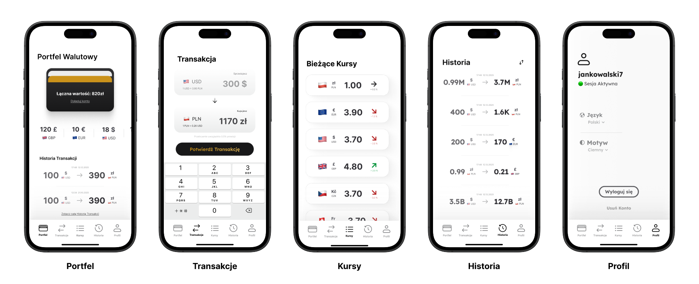
(dostępny tylko na PC i Laptopy, ze względu na ograniczenia Figma Make)
Do których funkcji dostęp powinien być najwygodniejszy? - Priorytetyzacja kluczowych akcji w nawigacji
Wnioski z testów użyteczności jasno pokazały, że użytkownicy mieli trudność z odnalezieniem funkcji doładowania konta. Kluczowa akcja była ukryta zbyt głęboko w strukturze profilu, co powodowało frustrację i wydłużało czas realizacji zadania.
Na podstawie tych obserwacji zdecydowałem się na przebudowę dolnej nawigacji. Ekran profilu został usunięty z głównego paska tabów, a jego miejsce zajęła funkcja doładowania konta — jedna z najważniejszych akcji w całym systemie. Przeniosłem profil użytkownika do kompaktowej ikony dostępnej na wszystkich głównych ekranach, tak aby dalej był bardzo dostępny.
Zmiana ta znacząco skróciła ścieżkę do wykonania transakcji oraz uczyniła interfejs bardziej intuicyjnym. Po iteracji użytkownicy bez dodatkowych wskazówek potrafili szybko zasilić konto i przejść do wymiany walut.
{kind=link}
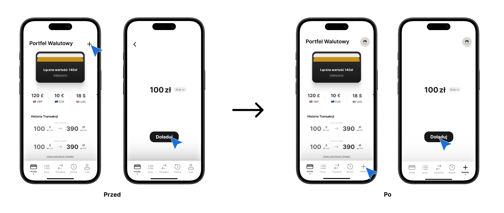
W kolejnych testach tym razem niemoderowanych testach użyteczności i First-Click użytkownicy znacznie szybciej wykonywali zadanie - cały proces zakupu waluty.
Efekt: użytkownik może szybciej i bezbłędnie ocenić stan finansów i zrealizować transakcję w krótszym czasie, co zwiększa wygodę i satysfakcję z korzystania z aplikacji.
W jaki sposób ułatwiam proces użytkownikowi? - Doprecyzowanie komunikatów systemowych
Testy użyteczności wykazały, że przekaz na niektórych ekranach był zbyt domyślny i niejednoznaczne, co powodowało dezorientację użytkowników oraz obawy przed błędnym wykonaniem operacji.
W odpowiedzi na ten problem wzbogaciłem ekrany o krótkie, zrozumiałe informacje uzupełniające, aby użytkownicy wiedzieli o wszystkich kosztach i zasadach działania systemu, aby upewnić ich i uspokoić podczas ich działań w aplikacji.
Przeprowadziłem walidację komunikatów systemowych, aby sprawdzić, czy są zrozumiałe dla użytkowników. Testy wykazały, że techniczne i niejednoznaczne komunikaty wprowadzały dezorientację i obawy przed błędnym wykonaniem operacji.
{kind=link}
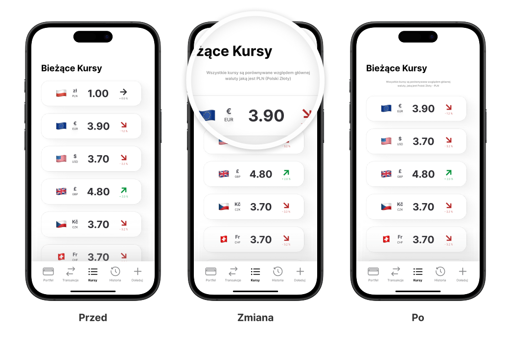
{kind=link}
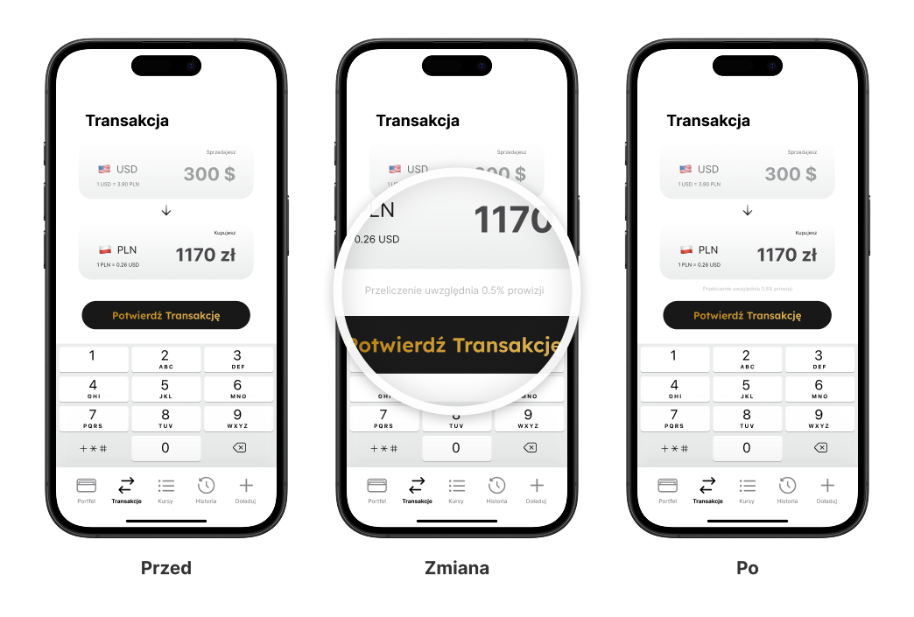
{kind=link}
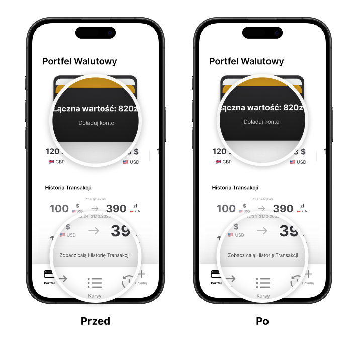
Dodatkowo zoptymalizowałem nawigację pod najczęstszy scenariusz użycia (sprawdzenie kursu → doładowanie → wymiana), skracając czas realizacji celu poprzez ustawienie kart w kolejności najczęściej powtarzanego flow. Oraz podmieniłem niektóre ikony na bardziej intuicyjne odpowiedniki tak, aby użytkownik jeszcze szybciej i łatwiej dostawał się w porządane miejsce.
{kind=link}
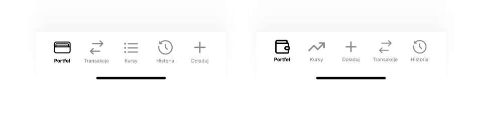
Efekt: użytkownicy czują większą kontrolę nad procesem i zaufanie do aplikacji, co przekłada się na płynniejsze i pewniejsze korzystanie z funkcji wymiany walut.
Efekt Końcowy
Co ostatecznie powstało?
{kind=link}
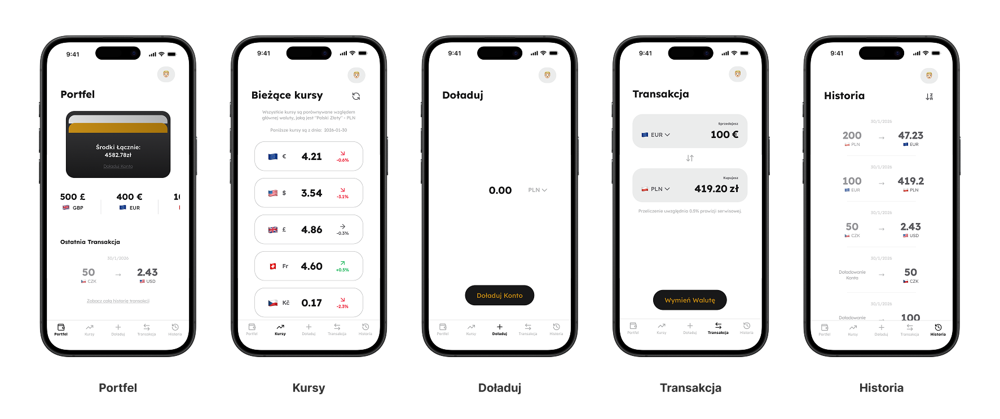
{kind=link}
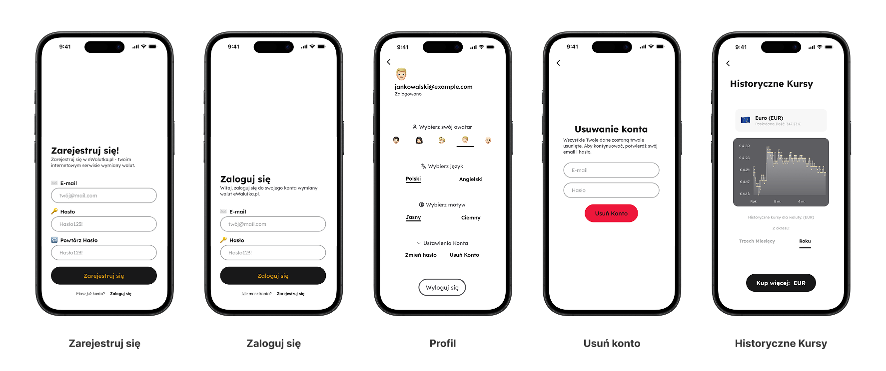
{kind=link}
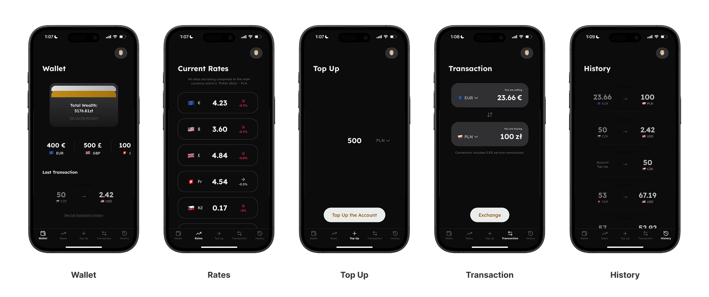
{kind=link}
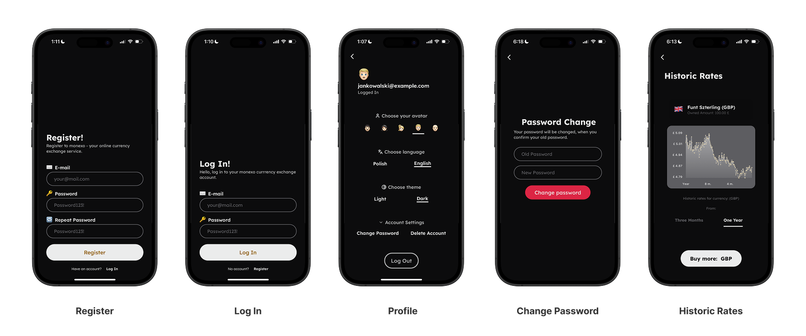
Projekt Monexo pozwolił mi przejść przez pełny proces projektowy — od analizy problemu i rynku, przez ideację i testy użyteczności, aż po iteracyjne doskonalenie interfejsu i komunikacji.
Skupiłem się na projektowaniu rozwiązań, które są proste dla użytkownika, przewidywalne w działaniu i wspierają cele biznesowe poprzez budowanie zaufania do produktu finansowego.
✅ Zaprojektowana aplikacja upraszcza proces wymiany walut spełniając przede wszsytkim główne potrzeby przeciętnego użytkownika.
✅ Transparentna komunikacja kursów i opłat buduje zaufanie użytkowników i chęć długofalowej relacji z produktem.
👨💻 Projekt jest w pełni zaimplementowany i dostępny w repozytorium GitHub. Znajdziesz tam kompletną aplikację mobilną, integrację z API NBP, logikę biznesową Web Service oraz bazę danych. Repozytorium zawiera też instrukcję uruchomienia, co pozwala przetestować działanie aplikacji np. na własnym urządzeniu.
Po Projekcie
Kluczowe Wnioski
🧠 Świadoma i dokładna obsługa stanów sieciowych jest kluczowa dla spójnego i przewidywalnego doświadczenia użytkownika w aplikacji mobilnej - internet mobilny nie jest tak niezawodny jak internet kablowy i zdecydowanie częściej jest podatny na różnego rodzaju przerwania.
Następne Kroki
🔜 Obsługa wielu portfeli walutowych - architektura interfejsu została zaprojektowana z myślą o łatwej rozbudowie o wiele portfeli (np. osobny portfel oszczędnościowy).
🔜 Automatyczne zlecenia wymiany walut - możliwość ustawiania zleceń zakupu przy określonym kursie, z zabezpieczeniami budżetowymi zapobiegającymi powstawaniu debetu.
🔜 Rozszerzenie o kryptowaluty - potencjał integracji z rynkiem kryptowalut poprzez API giełd, umożliwiający przechowywanie i wymianę zarówno walut tradycyjnych, jak i cyfrowych.